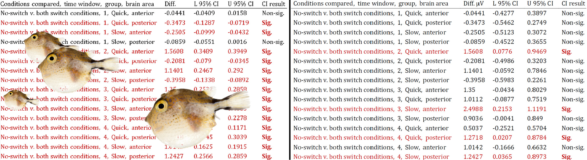
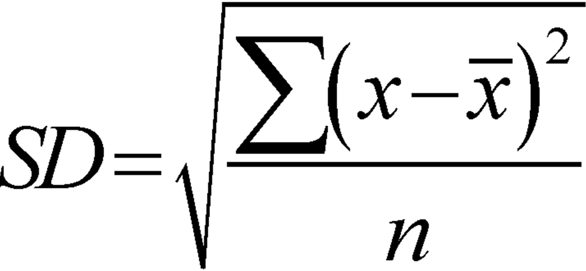

The clock strikes a certain hour, below all the Greg’s teaspoons at play. Results o’clock. The usual, please.
Usual table. summaryby (having to get the first peek in the cafeteria can only add zest). summaryBy(RT ~ list(Ptp, Group, Cond), behdata, FUN=summary). So, hardly any of the 95% Confidence Intervals contain 0. Does this really mean…?
‘For example, the hypothesis of equality of population means will be rejected at the 0.05 level if and only if a 95% CI for the mean difference does not contain 0.’
— Dallal (2002; http://www.jerrydallal.com/lhsp/pval.htm)
Of course. The CI just has that and more. The window is showing a chilly 1999 morning. Let’s see the summary again. Wee standard deviations. By card, please.
Mmm, the air outside is worth gingering up…
The trials!
The assumption of independence spoils another morning.
This new data consisted of response times (RT) that had been collected over several trials. The single dependent variable, RT, was accompanied by other variables which could be analyzed as independent variables. These included Group, Trial Number, and a within-subjects Condition. What had to be done first off, in order to take the usual table? The trials!
One must account for any redundant measures below the level of participants (the experimental trials, in this case), so that the sample size (N) used for any summary statistics match the number of participants (or the largest group, n). Why? This is a central assumption in statistics: observations must be independent. We can observe the independence assumption differently, depending on whether we’re summarizing data or performing statistical tests.


Measures of variance such as the Standard Deviation divide by the sample size. Thus, the larger the sample (N), the smaller the Standard Deviation, Standard Error, Confidence Interval…—that is, the variation or noise.
Aggregating is a snap. For example, with the aggregate() function in R, you just have to include all of your variables except that or those of the repeated measures:
behdata_aggreg = aggregate(behdata$RT, list(behdata$Ptp, behdata$Group, behdata$Cond),
data=behdata, FUN=mean)‘if we were to do a t-test on the unaggregated data, we would violate the independence assumption and the result of the t-test would be invalid.’
Now, usually the repetitions that concern us are the multiple trials or items in experiments, or other sub-participant measures. So what about participants–what are they never aggregated? McCarthy, Whittaker, Boyle, and Eyal (2017, p.10) note:
‘It has also been proposed that researchers aggregate the responses of participants within the same group and use the groups/clusters as the unit of analysis (Stevens, 2007). However, because this would result in losing sample size at the participant level, this approach is not optimal given the already small numbers of groups typically studied in group work research.’
Aggregation is no longer necessary, where linear mixed-effects models can be used. These models allow us to account for any clusters (Participants, Trials, Items…) by signing them into the error term (Brauer & Curtin, 2017).